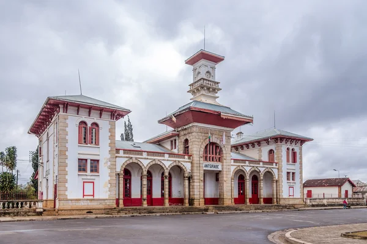

Le sud de Madagascar
A peu prés 10 jours
Antananarivo ~ Tuléar

>
Explorez le Nord de Madagascar
Le Sud de Madagascar , un environnement hostile où la température peut atteindre 40 dégré mais une région où vous pouvez découvrir des paysages majestueux se trouvant dans l'île.
D' où nous allons passer parcourir la RN7(Route Nationale 7) donné à la grande route reliant la capitale de Antananarivo à Tuléar
Ambatolampy ,fonderie d'Aluminium
Madagascar appellé également la Grande île , commence petit à petit à se faire une place parmi les destinations les plus courues dans l'océan Indien.
Cle s' explique notamment par la beauté époustouflante des ses paysages. D' ailleurs ne manquez pas d'aller à la découverte de la charmante ville méconnue d'Ambatolampy , Ambatolampy est une exellente alternative si vous n'êtes pas du genre à suivre les foules, c'est la célèbre ville artistique connue pour la fabrication d'objets en Alluminium notamment :"Les marmites et les cuillères en Alluminium"

La gare d 'Antsirabé
L'allée de la gare s' agit d' une grande avenue verdoyante et calme, avec l'ancienne gare d' Antsirabe au bout. Celle-ci ne fonctionne plus depuis plusieurs décénnies, et ne prend plus de voyageurs.Vous ne pourrez pas non plus la visiter, mais simplement, admirer son style qui rappelle fortement les années où Madagascar était une colonie, une architecture coloniale

L' hotel des Thermes
Créée depuis 1896, l'hôtel des Thermes est parmi les hotels de standing les plus réputés d'Antsirabé.
Il est situé non loin de la gare et la station thermale . Sa réputation lui vient du séjour en exil du roi Mohamed V dans les années 50 .
L' hotel dispose de:
-32 chambresstandarts, 4 appartements et 2 suites.
-Un restaaurant de spécialité Francaise, Italienne et Malgache et un snack
-Une piscine, un service massage ,
un aire de jeux pour les enfants, et diverses terrains de sports tels que le foot,le basket,... -Une boutique, un bureau de change ,un business center,accès wifi,...
Le Tsena Sabotsy
Etymologiquement le mot Sabotsy " est un terme Malagasy, qui se traduit directement par Samedi.
Un lexique qui lui a été attribué depuis des décenniers dans la région de Vakinankaratra (Prononcé "Vakinankarat'ch").
Autrefois , les colllecteurs qui vivaient dans les périphéries de la région, en particulier dans les campagnes , avaient coutumes de faire une livraison de produits locaux chaque début de week-end dans la ville d' Antsirabe.
Dans les années 80 et 90, le marché en question se trouvait sur une parcelle de terrainque la commune Urbaine d' Antsirabe avait consacr' au commerce. Une surface qui s'étendait approximativement sur une dizaine d'hectares,
là où les échoppes des commerçants constituaient juste d'une petite chaise ,
de tables en bois improvisées faites de cordes nouées
.jpg)
Andraikiba
itué à 7 kilomères d' Antsirabe, le lac Andraikiba est l'un des meilleurs endroits de la région pour se balader en fin d' aprés-midi.
Une petite promenade sur ses berges est trés agréable. D' ailleurs,le lac fut un lieu de détente pendant l' époque coloniale.
Aujourd'hui, hormis la balade autour du lac, il présente l'intéret d' une longue série de boutiques de souvenirs.
Plusieurs artistes locaux proposent également diverses animations sur place tous les jours.

Tritriva
Pour les Malagasy,le lac Tritriva inspire le respect et la peur, alors que pour les étrangers, il s'agit surtout d' un site naturel
d' une grande beauté à ne pas manquer lors d' un passage à Antsirabe. Dans tous les cas, il est indéniable que les lieux sont imprégnés
d' une atmosphère particulière. Les guides se font le devoir de rappeller "les fady(interdits)" du lac et deraconter avec ferveur l' histoire de deux amoureux.
Ambositra
Située à 1350 mètres d' altitude, Ambositra est une charmante petite ville aux couleurs chaudes avec ses maisons typiques en brique
. Abordant un décor montagneux, Ambositra est entourée de rizières en terasses et plantations d'eucalyptus à perte de vue.
ce peuple des hauteurs Betsileo travaille le bois de manière trés raffinée.
Reserve villageoise d' Anja
La réserve communautaire d' Anja est une réserve naturelle protégée depuis 1999. Conformément à la légalisation Malgache.
Elle s' étend sur 30 Ha et se situe à 13km au Sud d' Ambalavao, en bordure de la RN7. Cette aire protégée a été créée àl' initiative de la communauté
villageoise locale pour la protection de l'environnement. La réserve est gérée par une association locale pour la protection de l' environnement pour
garder son indépendance. Dans ce site, on trouve plus précisementdes "Maki-Catta".

Manakara
La première signification provient de l' existence du grand rocher" ou "aram-bato" qui se trouve dans la mer, du coté Nord au Sud. Ainsi, le lieu est appellé "Manana aram-bato" d' où le nom "Manakara" . Ce grand rocher est gardé par un être surnaturel qui vive sous l' eau; le "Rangahy Sola"
Le deuxième sens du nom Manakara est due à l' expression "7 vinany". Ce dernier signifie: la rencontre de l'eau douce avec l' eau de mer
Le parc National Ranomafana
Une faune et flore exeptionnelle
sur la grande ile. En effet, il vous fera découvrir une faune unique composée d' éspèces races malheureusement en voie
d' extinction. Si vous aimez la nature et les animaux, vous ne risquez pas d 'être déçus:
de nombreux oiseaux, de papillons, de chauves-souris et des lémuriens cohabitent dans ces forêts.Vous y trouverez aussi des éspèces
végétales unique au Monde et des
plantes médicinales.
Tuléar
Capitale du sud-ouest de Madagascar, Toliara ou Tuléar se trouve à environ 1 000km d' Antananarivo à l’extrémité de la RN7. Surnommée la " ville blanche " ou " la cité du soleil ", Tuléar est une ville cosmopolite.
Sous le Tropique du Capricorne, Tuléar fait partie des destinations de prédilection des voyageurs pour son ambiance détendue et son environnement paradisiaque. Toliara vous accueille avec chaleur et convivialité pour un séjour des plus agréables.